Biology
Body Fluids and Circulation
Why animals need internal transport; blood and lymph as human transport fluids
TRANSPORT FLUIDS OVERVIEW
📖Definition & Introduction
- Transport fluids are internal body fluids that deliver essentials to cells and remove wastes for normal function.
- All cells need continuous supply of nutrients, O2, water, ions and must eliminate CO2 and nitrogenous wastes.
- Simple animals rely on diffusion and surrounding water currents; complex animals need specialised transport mechanisms.
- In humans, blood is the primary transport fluid; lymph supports transport and returns tissue fluid to blood.
- Body fluids act like a delivery + waste-collection service for every cell.
🖼️Diagram
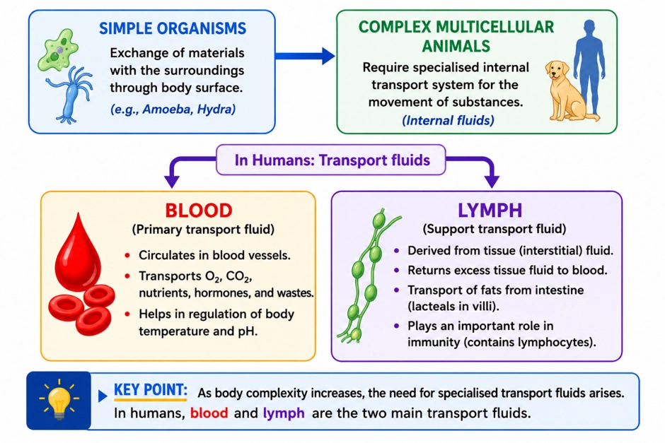
🎯Key Concepts
- 🚚Delivery: nutrients, O2, hormones reach cells via circulating fluids.
- 🗑️Waste collection: CO2 and metabolic wastes are carried to excretory/respiratory organs.
- 🧫Diffusion alone is enough only when body is small/thin and distances are short.
- 🧠Complex animals use internal fluids + vessels to maintain supply despite larger body size.
- 🩸Blood: main transport medium; also supports defence and clotting (briefly).
- 💧Lymph: derived from tissue fluid; returns it to veins, transports fats, carries lymphocytes.
🔎WHY INTERNAL TRANSPORT IS NEEDED
- Diffusion is too slow across long distances in larger bodies; inner cells still need constant supply.
- Transport links organs: gut → nutrients, lungs → O2, tissues → CO2 and wastes.
- Maintains stable internal environment by continuous distribution and removal (homeostasis support).
- Simple animals (e.g. sponges, coelenterates) circulate surrounding water through body cavities for exchange.
⚙️BLOOD vs LYMPH: ROLE IN TRANSPORT (INTRO LEVEL)
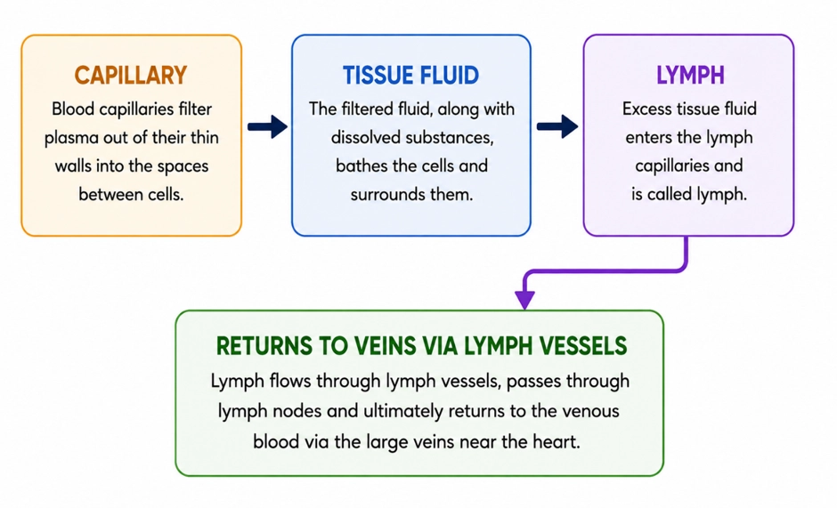
- Blood circulates in blood vessels; delivers O2, nutrients, hormones; collects CO2 and wastes.
- Tissue fluid forms when fluid leaves capillaries; it is the immediate exchange medium for cells.
- Lymph is tissue fluid collected in lymph vessels; returns it to major veins, preventing fluid loss.
- Lymph transports fats from intestinal villi via lacteals and carries lymphocytes for immunity.
⚖️Blood vs Lymph (Transport Fluids)
| Basis | Blood | Lymph |
|---|---|---|
| Main role | Primary transport: O2, nutrients, hormones; removes CO2, wastes | Supports transport: returns tissue fluid; fat absorption; immune cell transport |
| Where found | Within blood vessels (closed system in humans) | Within lymphatic vessels; formed from tissue fluid |
| Colour | Red (due to haemoglobin in RBCs) | Colourless |
| Cells/proteins (overview) | Contains RBCs, WBCs, platelets; plasma proteins higher | No RBCs/platelets; has lymphocytes; protein content lower than blood |
| Special textbook point | Main circulating transport fluid in humans | Fats absorbed via lacteals → lymph (not directly into blood capillaries) |
💡Memory Technique
“DWC: Delivery–Waste–Collection”
Blood as a connective tissue: plasma (matrix) + formed elements (cells/platelets)
BLOOD: PLASMA AND CELLS
📖Definition & Introduction
- Blood is a fluid connective tissue with a liquid matrix (plasma) containing formed elements.
- Plasma is a straw-coloured, viscous fluid that transports solutes, proteins, and cells.
- Blood components: plasma ≈ 55% and formed elements ≈ 45% (mostly RBCs).
- Plasma is mainly water (≈ 90–92%) plus proteins (≈ 6–8%) and other solutes.
- Serum is plasma without clotting factors (especially fibrinogen).
🖼️Diagram
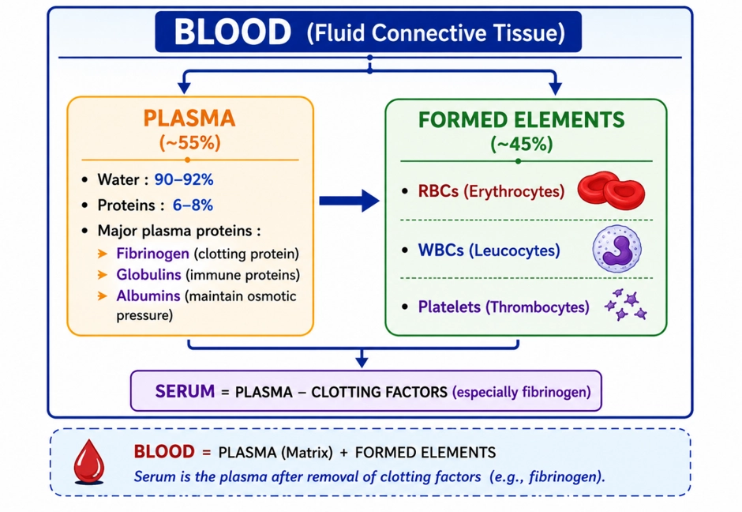
🎯Key Concepts
- 🧩Blood is called connective tissue because it has an extracellular matrix (plasma) carrying cells.
- 🧪Plasma proteins are key: albumins (osmotic balance), globulins (defence), fibrinogen (clotting).
- 💧Plasma water is the main solvent for ions, nutrients, hormones, and wastes.
- 🧫Formed elements = RBCs + WBCs + platelets; together about 45% of blood volume.
- 🧷Exam trap: plasma has clotting factors; serum lacks clotting factors.
🔎PLASMA: COMPOSITION & WHAT IT CARRIES
- Fraction of blood: ~55%; straw-coloured and viscous.
- Water ~90–92%: solvent medium for transport and heat distribution.
- Proteins ~6–8%: mainly albumins, globulins, fibrinogen.
- Other solutes: mineral ions (Na+, Ca2+, HCO3−, Cl−), nutrients (glucose, amino acids, lipids), hormones, wastes.
⚙️PLASMA PROTEINS (HIGH-YIELD FUNCTIONS)
- Albumins: major contributors to plasma osmotic balance; help maintain blood volume.
- Globulins: mainly involved in defence; many include immunoglobulins (antibodies).
- Fibrinogen: essential for clot formation; converted to fibrin during coagulation.
- Most clotting factors circulate in plasma largely in inactive forms until activated.
⚖️Plasma vs Serum
| Basis | Plasma | Serum |
|---|---|---|
| Definition | Liquid part of blood with clotting factors | Plasma after removing clotting factors |
| Fibrinogen | Present | Absent |
| How obtained | From anticoagulated blood after centrifugation | From clotted blood after clot removal |
| Use (conceptual) | Clotting studies; transfusions (as plasma) | Biochemical/serology tests (antibodies, hormones) |
💡Memory Technique
“Mnemonic: FGA in plasma proteins”
Biconcave, enucleated O2/CO2 carriers packed with haemoglobin; made in marrow, cleared by spleen
ERYTHROCYTES (RBCs)
📖Definition & Introduction
- Erythrocytes (RBCs) are the most abundant formed elements of blood specialised for respiratory gas transport.
- In most mammals, mature RBCs are enucleated (no nucleus) and lack most organelles to maximise haemoglobin space.
- Typical shape is biconcave disc, increasing surface area and flexibility for capillary passage.
- Red colour is due to haemoglobin, an iron-containing conjugated protein that binds O2 reversibly.
- RBCs have a finite lifespan and are continuously replaced to maintain a near-constant count.
🖼️Diagram
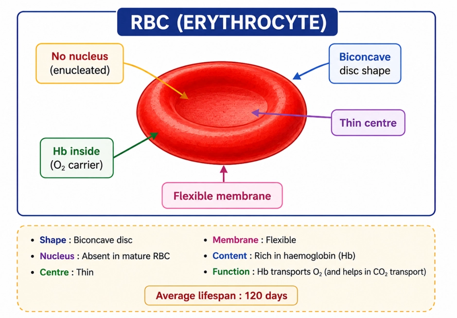
🎯Key Concepts
- 🔴Count (healthy adult man): 5.0–5.5 million mm−3 of blood
- 🧬Mature RBC: enucleated in most mammals; more room for haemoglobin
- 🥯Shape: biconcave → high surface area and short diffusion distance
- 🧲Haemoglobin content of blood: 12–16 g per 100 mL (healthy individual)
- 🏭Formation in adults: red bone marrow (erythropoiesis)
- ⏳Lifespan: ~120 days; removed mainly by spleen ("graveyard of RBCs")
🔎STRUCTURE → FUNCTION LINKS (WHY RBCS LOOK THIS WAY)
- Biconcave disc increases surface area for rapid O2/CO2 diffusion.
- Thin centre reduces diffusion distance; helps faster loading/unloading of gases.
- Enucleated state provides more space for haemoglobin; improves O2 carrying capacity.
- Highly flexible membrane lets RBCs squeeze through narrow capillaries without rupturing.
⚙️ERYTHROPOIESIS & CLEARANCE (FORMATION → LIFESPAN → DESTRUCTION)
- Adult site of RBC formation: red bone marrow of bones.
- Circulating RBCs function for about 120 days before ageing changes membrane properties.
- Old/damaged RBCs are removed mainly by the spleen (also liver to some extent).
- Spleen is called the "graveyard of RBCs" due to high RBC destruction activity.
⚖️RBCs vs WBCs (high-yield differences)
| Basis | RBCs (Erythrocytes) | WBCs (Leucocytes) |
|---|---|---|
| Pigment | Haemoglobin present (red) | No haemoglobin (colourless) |
| Nucleus (mammals) | Absent in mature cells (enucleated) | Present (nucleated) |
| Main role | Transport of respiratory gases | Defence and immunity |
| Typical count | 5.0–5.5 million mm−3 (adult man) | 6000–8000 mm−3 |
💡Memory Technique
“Mnemonics: "MARROW Makes, SPLEEN Splits"”
Colourless, nucleated blood cells for defence: phagocytosis, inflammation, allergy and immunity
LEUCOCYTES (WBCs)
📖Definition & Introduction
- Leucocytes (WBCs) are colourless, nucleated formed elements of blood that protect the body.
- Normal WBC count in blood: 6000–8000 mm−3 (mm−3 = μL−1).
- They are generally short-lived compared to RBCs and actively respond to infection/injury.
- Classified into granulocytes (with cytoplasmic granules) and agranulocytes (without obvious granules).
- Key outcomes of WBC action: phagocytosis, inflammatory reactions, allergy, and specific immunity.
🖼️Diagram
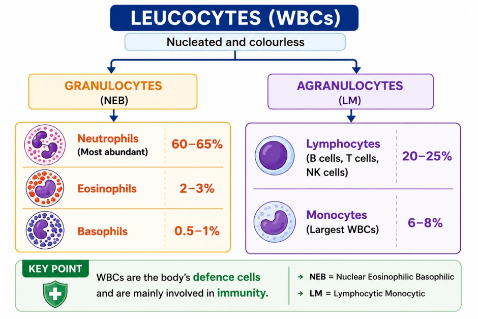
🎯Key Concepts
- NoneDifferential count (high-yield): Neutrophils 60–65%, Lymphocytes 20–25%, Monocytes 6–8%, Eosinophils 2–3%, Basophils 0.5–1%.
- NoneMain phagocytes (as per NCERT focus here): Neutrophils and Monocytes.
- NoneBasophils release histamine, serotonin, heparin → inflammation and allergy-related responses.
- NoneEosinophils resist infections and are strongly associated with allergic reactions.
- NoneB and T lymphocytes produce immune responses (humoral and cell-mediated).
🔎GRANULOCYTES (NEB): MAIN ROLES
- Neutrophils (60–65%): most abundant; strong phagocytes against invading microbes.
- Eosinophils (2–3%): resist infections; linked to allergic reactions.
- Basophils (0.5–1%): secrete histamine, serotonin, heparin → inflammation and allergy-related responses.
- Granules contain mediators/enzymes; hence key in inflammatory signalling.
⚙️AGRANULOCYTES (LM): IMMUNITY + CLEAN-UP
- Monocytes (6–8%): phagocytic; help remove pathogens and cellular debris in tissues.
- Lymphocytes (20–25%): central to immunity.
- B-lymphocytes: antibody-mediated (humoral) immunity.
- T-lymphocytes: cell-mediated immunity; coordinate/kill infected cells.
⚖️Granulocytes vs Agranulocytes (High-yield)
| Basis | Granulocytes | Agranulocytes |
|---|---|---|
| Cytoplasm | Granules present | No obvious granules |
| Types | Neutrophils, Eosinophils, Basophils | Lymphocytes, Monocytes |
| Typical key roles | Phagocytosis, allergy mediators, inflammation | Specific immunity (B/T), phagocytosis (monocytes) |
| Major phagocytes (in this chapter) | Neutrophils | Monocytes |
| Relative abundance | Neutrophils are the maximum | Lymphocytes are the major agranulocytes |
💡Memory Technique
“NEB has Grains; LM has Immunity”
Megakaryocyte-derived cell fragments that help stop bleeding by platelet plug formation and initiating coagulation
PLATELETS AND CLOTTING ROLE
📖Definition & Introduction
- Platelets (thrombocytes) are small, cell fragments formed from bone-marrow megakaryocytes.
- They circulate without a nucleus and help maintain haemostasis (stoppage of bleeding).
- Normal platelet count: 1,50,000–3,50,000 mm−3 of blood.
- On injury, they adhere/aggregate at the damaged vessel wall to form a temporary platelet plug (primary haemostasis).
- They release platelet factors that help initiate the coagulation cascade leading to a stable fibrin clot.
- Low platelet count (thrombocytopenia) causes clotting disorders and risk of excessive blood loss.
🖼️Diagram
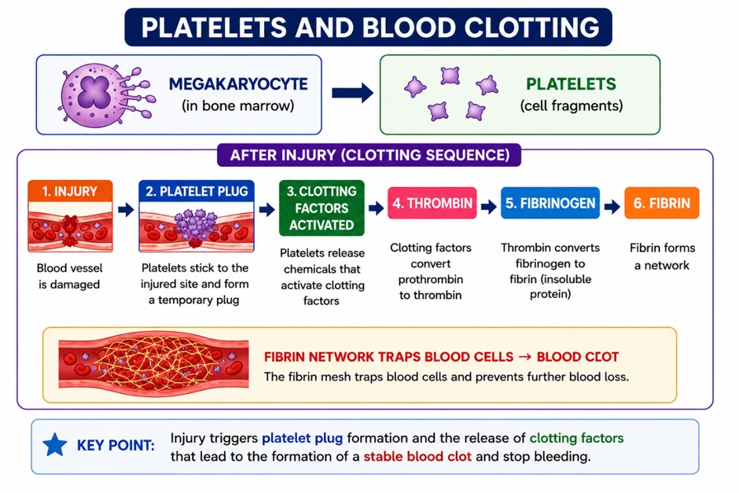
🎯Key Concepts
- 🧩Platelets are fragments, not complete cells; derived from bone marrow megakaryocytes.
- 🔢Normal range: 1,50,000–3,50,000 per mm3 blood (exam value).
- 🩹First response to injury: adhesion + aggregation → platelet plug (primary haemostasis).
- ⚙️Platelet and tissue factors help start a cascade that forms thrombokinase/prothrombin activator; with Ca2+ it converts prothrombin → thrombin.
- 🧵Thrombin converts fibrinogen (plasma) to fibrin threads → stable clot network.
- ⚠️Reduced platelets → delayed clotting, petechiae/bleeding tendency, excessive blood loss.
🔎HOW PLATELETS INITIATE CLOTTING
- Injury exposes damaged tissue/vessel wall → platelets become activated.
- Activated platelets adhere to injury site and aggregate with each other.
- They release platelet factors that help start the coagulation cascade.
- Cascade forms thrombokinase/prothrombin activator using multiple factors.
- Ca2+ is essential for key conversion steps in clotting.
⚙️CLINICAL LINK: PLATELET COUNT AND BLEEDING RISK
- Reduced platelets (thrombocytopenia) → defective platelet plug formation.
- Result: excessive bleeding even after small injuries due to poor haemostasis.
- Normal count is asked with units: per mm3 (or µL) of blood.
- Do not confuse platelet initiation with fibrin formation from fibrinogen.
⚖️PLATELETS vs RBCs vs WBCs (QUICK CONTRAST)
| Basis | Platelets (Thrombocytes) | RBCs (Erythrocytes) | WBCs (Leucocytes) |
|---|---|---|---|
| Nature | Cell fragments | Cells | Cells |
| Origin (adult) | From megakaryocytes (bone marrow) | Red bone marrow | Bone marrow/lymphoid tissues |
| Normal count | 1,50,000–3,50,000 mm−3 | ≈ 5.0–5.5 million mm−3 (man) | ≈ 6000–8000 mm−3 |
| Main role | Primary haemostasis + triggers coagulation | Transport O2/CO2 | Defence/immunity |
💡Memory Technique
“Mnemonic: MEGA → PLUG → FIBRIN”
RBC antigens decide group; plasma antibodies decide transfusion safety (agglutination rule)
BLOOD GROUPS: ABO SYSTEM
📖Definition & Introduction
- ABO system classifies human blood into A, B, AB, O based on antigen A/B on RBC surface.
- Plasma contains natural antibodies against the absent antigen(s): anti-A and/or anti-B.
- If donor RBC antigen meets recipient plasma antibody → agglutination (clumping) + RBC destruction.
- Hence, donor blood must be matched with recipient to avoid severe transfusion reaction.
- In ABO-only logic: O is universal RBC donor; AB is universal RBC recipient.
🖼️Diagram
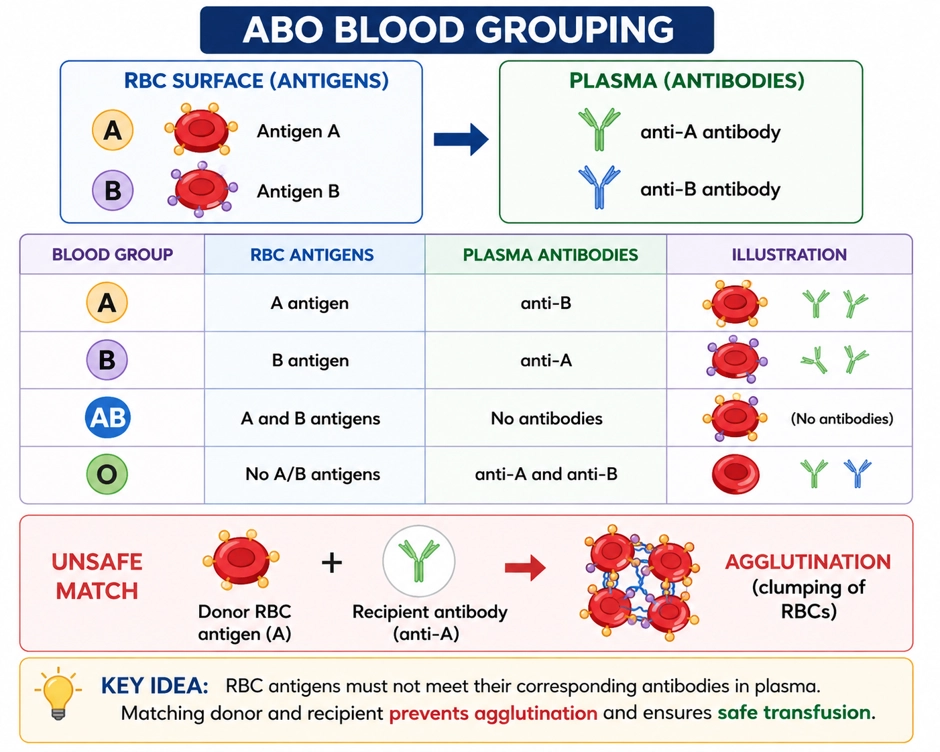
🎯Key Concepts
- 🧫RBCs carry antigens; plasma carries antibodies (never on same person for that antigen).
- 🧲Agglutination occurs when recipient antibodies bind donor RBC antigens.
- 🔁Receiving rule: accept RBCs only if they have no antigen that your plasma antibodies attack.
- 🎯Group AB has no anti-A/anti-B → can receive from all ABO groups (RBCs).
- 🛡️Group O has no A/B antigens on RBCs → can donate RBCs to all ABO groups.
⚙️TRANSFUSION MATCHING (RBC TRANSFUSION LOGIC)
- Recipient must NOT receive donor RBCs bearing an antigen against which recipient has antibodies.
- So, A can receive from A, O; B from B, O.
- AB can receive from AB, A, B, O (no antibodies to attack A/B antigens).
- O can receive from O only (has both anti-A and anti-B).
- Exam wording: Universal donor = O, Universal recipient = AB (ABO-only).
💡Memory Technique
“Mnemonic: "Antigen on RBC = letter in group"”
Rh (D) antigen on RBCs, antibody formation after exposure, Rh incompatibility in pregnancy, and prevention by anti-D
RH SYSTEM AND ERYTHROBLASTOSIS FOETALIS
📖Definition & Introduction
- Rh system is a blood grouping based on presence/absence of Rh (D) antigen on RBC membrane.
- Rh+: Rh (D) antigen present; occurs in the majority of humans (often about 80%, population-dependent).
- Rh−: Rh (D) antigen absent; no natural anti-Rh (anti-D) antibodies in plasma initially.
- An Rh− person forms anti-D antibodies only after exposure to Rh+ RBCs (e.g., transfusion or fetomaternal bleed).
- Erythroblastosis foetalis (haemolytic disease of fetus/newborn) occurs when maternal anti-D attacks fetal Rh+ RBCs.
- Prevention: give anti-D immunoglobulin to an Rh− mother within 72 hours after delivery of an Rh+ baby (and after other sensitising events as advised) to prevent maternal sensitisation.
🖼️Diagram
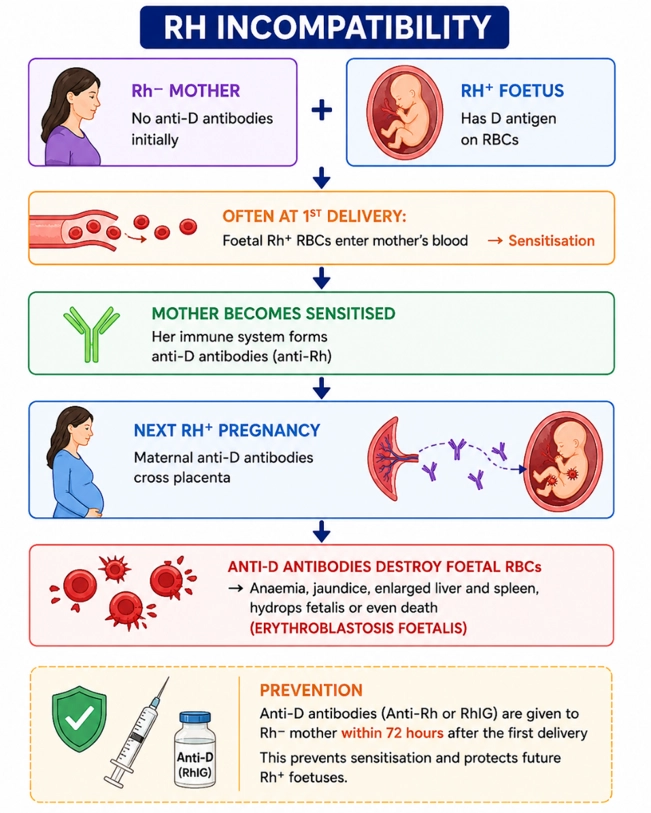
🎯Key Concepts
- 🧬Rh factor = RBC surface antigen; clinically most important is D antigen.
- 👥Population: Rh+ is common (often ~80%); Rh− is less common (varies with population).
- 🛡️Anti-D antibodies appear only after exposure (sensitisation) in an Rh− individual.
- 🤰Risk setup: Rh− mother carrying Rh+ fetus (usually when father is Rh+).
- ⚠️First Rh+ pregnancy is usually unaffected; sensitisation commonly occurs at delivery, but can occur earlier if fetomaternal bleed happens.
- 💉Prevention: anti-D injection after delivery (and after sensitising events) clears fetal Rh+ cells from mother before she makes her own anti-D.
🔎RH ANTIGEN: Rh+ AND Rh−
- Rh (D) antigen is on RBC membrane; name comes from Rhesus monkey antigen similarity.
- Rh+ individuals: D antigen present; constitute a majority (often ~80%, population-dependent).
- Rh− individuals: D antigen absent; do not have anti-D antibodies naturally.
- Rh group should be matched in transfusion to avoid sensitisation and later reactions.
⚙️ERYTHROBLASTOSIS FOETALIS (RH INCOMPATIBILITY): MECHANISM + PREVENTION
- Occurs when an Rh− mother carries an Rh+ fetus.
- First Rh+ pregnancy is usually not affected because placenta largely prevents blood mixing.
- Sensitisation often occurs at delivery when fetal Rh+ RBCs enter maternal blood → mother forms anti-D.
- In a subsequent Rh+ pregnancy, maternal anti-D (IgG) crosses placenta → haemolysis of fetal RBCs.
- Effects: severe anaemia and jaundice; may be fatal if haemolysis is massive.
⚖️Rh+ vs Rh−
| Basis | Rh+ | Rh− |
|---|---|---|
| Rh (D) antigen on RBC | Present | Absent |
| Frequency in humans | Majority (often ~80%; varies with population) | Minority (often ~20%; varies with population) |
| Anti-Rh antibodies (baseline) | Absent | Absent (form only after exposure/sensitisation) |
| After exposure to Rh+ blood | No anti-D response against self D antigen | Forms anti-D antibodies (sensitised) → risk in future exposures |
| Pregnancy issue (mother–fetus) | Rh+ mother: usually no Rh problem | Rh− mother with Rh+ fetus: risk of erythroblastosis (especially in subsequent Rh+ pregnancy) |
💡Memory Technique
“Mnemonic: "1st = Sensitise (usually), 2nd = Strike"”
Injury-triggered enzyme cascade converts soluble fibrinogen into insoluble fibrin clot (needs Ca2+)
COAGULATION CASCADE
📖Definition & Introduction
- Blood coagulation is a protective mechanism forming a clot (coagulum) to prevent blood loss after injury.
- A clot is mainly a network of fibrin threads that traps blood cells and platelets at the injury site.
- Most clotting factors circulate in plasma in inactive forms and get activated sequentially (cascade).
- Fibrinogen (soluble plasma protein) is converted to fibrin (insoluble threads) by thrombin.
- Prothrombin (inactive) is converted to thrombin in presence of thrombokinase (enzyme complex) and Ca2+.
- Injury activates platelets and damaged tissues, releasing tissue/platelet factors that initiate the cascade.
🖼️Diagram
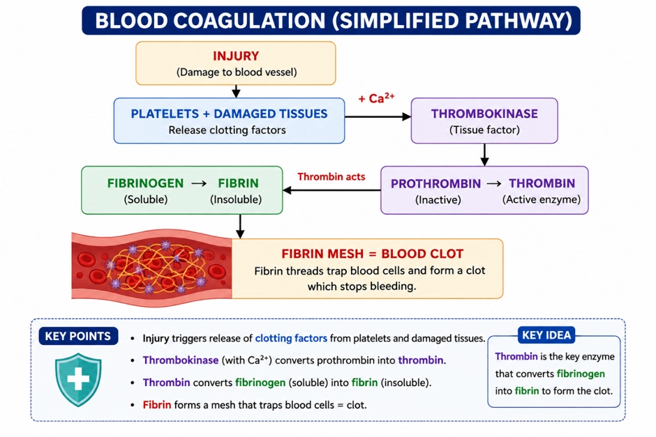
🎯Key Concepts
- 🧩Cascade reactions amplify: one activation step triggers many downstream activations.
- 🧪Key end-point: fibrinogen → fibrin (fibrin forms the clot framework).
- ⚙️Central enzyme: thrombin (formed from prothrombin).
- 🧱Thrombokinase is an enzyme complex formed at the injury site by a cascade of plasma factors.
- 🧲Ca2+ is essential for multiple clotting steps; its absence impairs clotting.
- 🧵Fibrin threads trap platelets + RBCs/WBCs → firm coagulum over the wound.
🔎STEPWISE BIOCHEMICAL SEQUENCE
- 1) Injury/trauma → platelets rupture/activate; damaged tissues also release initiating factors.
- 2) Cascade activation of inactive plasma factors → formation of thrombokinase (enzyme complex).
- 3) Prothrombin → thrombin in presence of thrombokinase and Ca2+.
- 4) Fibrinogen → fibrin threads by thrombin (fibrin is insoluble).
- 5) Fibrin threads form a mesh that traps blood cells/platelets → clot (coagulum) forms.
⚖️PLASMA vs SERUM (CLINICAL + EXAM TRAP)
| Basis | Plasma | Serum |
|---|---|---|
| Definition | Liquid part of blood with clotting factors | Plasma without clotting factors |
| Fibrinogen | Present | Absent (removed during clotting) |
| Relevance to coagulation | Can clot (contains factors) | Does not clot (lacks factors) |
💡Memory Technique
“Mnemonic: ProTHROMbin → THROMbin → fiBRIN”
From tissue fluid to lymph: drainage, immunity, and fat transport via lacteals
LYMPH AND LYMPHATICS
📖Definition & Introduction
- Lymph is tissue (interstitial) fluid that enters lymphatic vessels and is ultimately returned to major veins.
- Tissue fluid forms when water and small solutes filter out of capillaries; most plasma proteins and most formed elements remain in blood.
- Lymph is colourless and contains lymphocytes important for immune responses.
- Lymphatics are a one-way vessel network that drains excess interstitial fluid back to blood.
- In intestinal villi, lacteals absorb fats into lymph (not directly into blood capillaries).
🖼️Diagram
Tissue fluid formed from capillaries is collected as lymph and returned to veins.
🎯Key Concepts
- 💧Capillary filtration forms tissue fluid in spaces between cells; exchange between blood and cells occurs via tissue fluid.
- 🧫Large plasma proteins largely remain in capillaries, so tissue fluid/lymph has lower protein than plasma.
- 🛣️Lymphatic vessels collect tissue fluid and drain it back to major veins near the heart.
- 🛡️Lymphocytes in lymph support immune responses (B and T lymphocytes).
- 🧈Dietary fats absorbed in villi enter lacteals → lymph → blood via venous drainage.
🔎TISSUE FLUID FORMATION (CAPILLARY → INTERSTITIUM)
- As blood passes capillaries, some water and small water-soluble solutes filter out.
- Most formed elements (RBCs, most WBCs, platelets) stay inside capillaries.
- Most plasma proteins remain in blood; hence tissue fluid has lower protein than plasma.
- Cells receive O2/nutrients and release CO2/wastes via this interstitial medium.
⚙️LYMPHATIC DRAINAGE + LACTEALS (FAT ABSORPTION)
- Excess tissue fluid enters lymph capillaries → becomes lymph and flows in lymphatic vessels.
- Lymphatic system is an elaborate network that drains lymph back to the major veins.
- Lymph is colourless and contains lymphocytes supporting immune responses.
- In intestinal villi, lacteals absorb fats into lymph; fats then reach blood when lymph drains into veins.
⚖️PLASMA vs TISSUE FLUID vs LYMPH (High-yield differences)
| Basis | Plasma (in blood) | Tissue fluid (interstitial) | Lymph (in lymphatics) |
|---|---|---|---|
| Location | Inside blood vessels | Between tissue cells | Inside lymph vessels |
| Proteins | Higher (albumin, globulin, fibrinogen etc.) | Lower (most plasma proteins remain in capillaries) | Lower than plasma; similar to tissue fluid |
| Cells | RBCs + WBCs + platelets present | Normally no RBCs; very few cells | Contains specialised lymphocytes |
| Colour | Straw-coloured | Clear/colourless | Colourless |
| Main role here | Transport in bloodstream | Exchange medium between blood and cells | Drainage to veins; immunity; fat transport via lacteals |
💡Memory Technique
“Mnemonic: "FiPS → LVi"”
Open vs closed systems, heart chambers in vertebrates, and single/incomplete double/complete double circulation
CIRCULATION TYPES & VERTEBRATE HEART
📖Definition & Introduction
- Circulatory system is the transport pathway that delivers O2/nutrients and removes CO2/wastes using a circulating fluid.
- Open circulatory system: fluid leaves vessels and bathes organs in body cavities called sinuses.
- Closed circulatory system: blood remains within a continuous network of vessels; exchange occurs via capillaries.
- Vertebrate hearts are muscular and chambered; chamber number correlates with separation of O2 and de-O2 blood.
- Single vs double circulation depends on whether blood passes through the heart once or twice per complete body cycle.
🎯Key Concepts
- 🕳️Open system: haemolymph flows in sinuses; typical of arthropods, many molluscs.
- 🧪Closed system: higher pressure, faster flow, precise regulation; seen in annelids and chordates.
- 🐟Fish: 2 chambers (1 atrium + 1 ventricle) and single circulation via gills.
- 🐸Amphibians: 3 chambers (2 atria + 1 ventricle) → incomplete double circulation (mixing).
- 🦎Reptiles (except crocodiles): functionally 3-chambered → incomplete double circulation.
- 🐊Crocodiles: 4 chambers; complete separation of atria and ventricles.
🔎OPEN vs CLOSED CIRCULATORY SYSTEM
- Open: heart pumps haemolymph into vessels → sinuses → returns to heart.
- Closed: heart pumps blood through arteries → capillaries → veins; always inside vessels.
- Closed system is more advantageous: flow can be precisely regulated to organs as needed.
- Examples: Arthropods, many molluscs (open) vs annelids, chordates (closed).
⚙️VERTEBRATE HEART CHAMBERS & TYPE OF CIRCULATION
- 2-chambered (fish): 1 atrium + 1 ventricle; gills oxygenate blood after heart.
- 3-chambered (amphibians, most reptiles): 2 atria + 1 ventricle → mixing in ventricle.
- 4-chambered (crocodiles, birds, mammals): 2 atria + 2 ventricles → no mixing.
- Single circulation: blood passes through heart once per cycle (fish).
- Double circulation: blood passes through heart twice per cycle (pulmonary + systemic).
⚖️Open vs Closed Circulatory System
| Basis | Open circulatory system | Closed circulatory system |
|---|---|---|
| Where fluid flows | Into sinuses/body cavities | Within blood vessels only |
| Exchange with tissues | Direct bathing of organs | Across capillary walls |
| Pressure & control | Lower pressure; less precise | Higher pressure; precisely regulated |
| Typical examples | Arthropods, many molluscs | Annelids, chordates |
| Exam keyword | Sinuses | Closed network |
💡Memory Technique
“Mnemonic: "FiSh 2, Am-Rep 3, Croc-BM 4"”
Position, coverings, chambers, valves, wall thickness, and intrinsic pacemaker pathway
HUMAN HEART: STRUCTURE AND CONDUCTION
📖Definition & Introduction
- Human heart is a 4-chambered muscular pump with an intrinsic nodal conduction system.
- Located in thoracic cavity between lungs; slightly tilted to the left; about a clenched fist size.
- Enclosed by a double-walled pericardium with pericardial fluid reducing friction.
- Right and left sides are separated by septa, preventing mixing of oxygenated and deoxygenated blood.
- Valves ensure one-way blood flow and prevent backflow during pressure changes.
🖼️Diagram
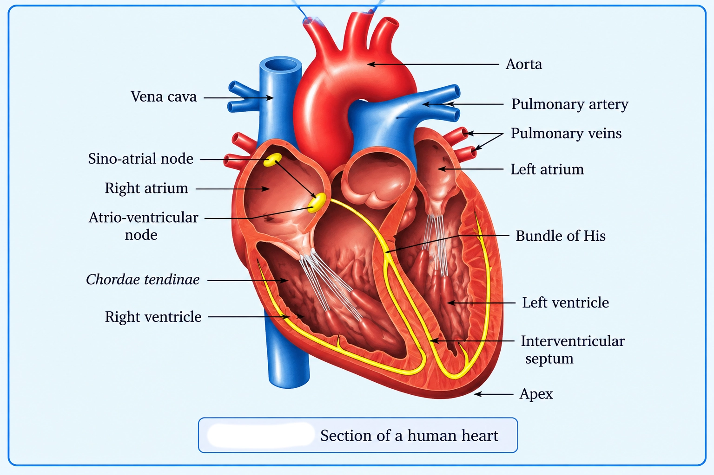
🎯Key Concepts
- POSIHeart position: thoracic cavity (mediastinum), between lungs; apex points left.
- COVEPericardium: double-walled sac; pericardial fluid cushions and reduces friction.
- SEPTSepta: interatrial septum (thin) and interventricular septum (thick) separate right vs left sides.
- AV VAV valves: tricuspid (right, 3 cusps) and mitral/bicuspid (left, 2 cusps).
- SL VSemilunar valves at pulmonary artery and aorta openings prevent backflow to ventricles.
- WALLVentricles have thicker myocardium than atria; left ventricle thickest (systemic pump).
🔎POSITION & COVERINGS (PERICARDIUM)
- Heart lies in thoracic cavity, between lungs; slightly left-tilted (apex left).
- Heart is mesodermally derived (NCERT).
- Pericardium is a double-walled membranous bag; protects and anchors the heart.
- Pericardial fluid between layers reduces friction during heartbeat.
⚙️CHAMBERS, SEPTA, VALVES & WALL THICKNESS
- Chambers: two upper atria (receive blood) and two lower ventricles (pump out).
- Interatrial septum separates atria; interventricular septum separates ventricles.
- AV valves: tricuspid (right) and mitral/bicuspid (left); prevent backflow to atria.
- Semilunar valves at pulmonary artery and aorta; prevent backflow into ventricles.
- Walls: ventricles thicker than atria; left ventricle thickest for systemic circulation.
⚖️HEART VALVES: QUICK DIFFERENCES
| Basis | Atrioventricular (AV) valves | Semilunar (SL) valves |
|---|---|---|
| Location | Between atria and ventricles | At openings of aorta and pulmonary artery |
| Examples | Tricuspid (right), Mitral/Bicuspid (left) | Aortic SL, Pulmonary SL |
| Main function | Prevent backflow ventricle → atrium | Prevent backflow artery → ventricle |
| When they close (logic) | During ventricular systole (ventricular pressure rises above atrial) | During ventricular diastole (arterial pressure exceeds ventricular) |
💡Memory Technique
“MNEMONICS THAT ACTUALLY STICK”
One heartbeat: mechanical events + ECG + circulation routes + control + key disorders
CARDIAC CYCLE, ECG, PATHWAYS, REGULATION & DISORDERS
📖Definition & Introduction
- Cardiac cycle is the cyclic sequence of atrial/ventricular systole and diastole producing one heartbeat.
- Valve movements are driven by pressure differences, ensuring one-way blood flow.
- Heart sounds: lub (AV valve closure) and dub (semilunar valve closure).
- ECG records heart electrical activity: P (atrial depolarisation), QRS (ventricular depolarisation), T (ventricular repolarisation).
- Double circulation: pulmonary (heart↔lungs) and systemic (heart↔body), with special routes: hepatic portal and coronary.
- Cardiac activity is myogenic (SAN pacemaker) but is moderated by ANS and adrenal medullary hormones.
🖼️Diagram
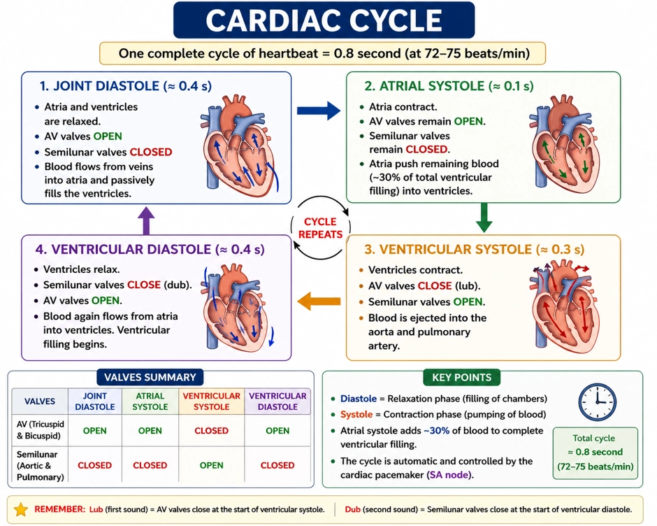
🎯Key Concepts
- ⏱️At ~72 beats/min, one cardiac cycle lasts ~0.8 s; ventricles eject ~70 mL per beat (SV).
- 🚪Ventricular systole: AV valves close first; semilunar open when ventricular pressure exceeds arterial.
- 🔁Ventricular diastole: semilunar close first; AV open when ventricular pressure falls below atrial.
- 🎧Lub = tricuspid + mitral closure; Dub = aortic + pulmonary semilunar closure.
- 📈Count QRS complexes per time to estimate heart rate on ECG.
- 🧠Sympathetic: ↑HR, ↑force, ↑CO; Parasympathetic: ↓HR, ↓conduction, ↓CO.
🔎ECG WAVES ↔ MECHANICAL EVENTS (HIGH-YIELD)
- P-wave: atrial depolarisation → atrial contraction begins soon after.
- QRS: ventricular depolarisation → marks onset of ventricular systole.
- T-wave: ventricular repolarisation → mechanical relaxation follows; systole ends around the T wave with a short electromechanical delay.
- ECG deviations from normal wave shape can indicate cardiac abnormality/disease.
⚙️CIRCULATORY PATHWAYS + SPECIAL ROUTES
- Pulmonary: right ventricle → pulmonary artery → lungs → pulmonary veins → left atrium.
- Systemic: left ventricle → aorta → tissues → venae cavae → right atrium.
- Hepatic portal: intestine → hepatic portal vein → liver → hepatic veins → systemic circulation.
- Coronary: coronary arteries supply myocardium; coronary veins drain it to right atrium.
⚖️Pulmonary vs Systemic Circulation (Humans: complete double circulation)
| Basis | Pulmonary | Systemic |
|---|---|---|
| Starts from | Right ventricle | Left ventricle |
| Main artery | Pulmonary artery | Aorta |
| Gas status in artery | Deoxygenated | Oxygenated |
| Returns to | Left atrium (pulmonary veins) | Right atrium (venae cavae) |
| Primary function | O2 uptake, CO2 removal | Deliver O2/nutrients; collect wastes |
💡Memory Technique
“Mnemonic: P–QRS–T = "Prepares atria, QRS = ventricles contract, T = ventricles reset"”